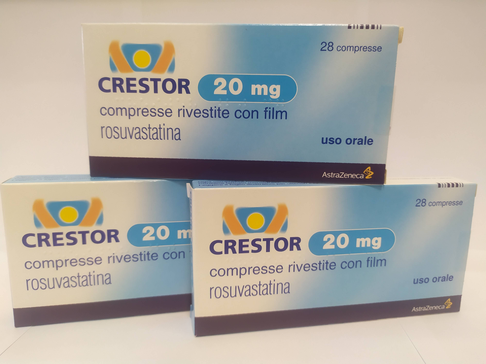

Контактна інформація:
Ціна: 650 грн/уп.
В наявності
Виробник: Великобританія
Ціна: 650 грн/уп.
В наявності
Саме в FarmItal ви можете купити Крестор 20мг, Crestor 20mg в Україні. Гарантовано якісні ліки з Італії!
Доставка Crestor 20mg здійснюється транспортними компаніями, терміни виконання замовлення обумовлюються менеджером Фармітал. Ви можете замовити Крестор 20мг у містах: Одеса, Херсон, Чернігів, Сєверодонецьк, Бердянськ, Бровари, Дніпро, Вінниця, Київ, Слов'янськ, Полтава, Краматорськ, Біла Церква, Кам'янське, Маріуполь, Чернівці, Олександрія, Кам'янець-Подільський, Львів, Запоріжжя, Кропивницький, Житомир, Івано-Франківськ, Суми, Черкаси, Костянтинівка, Мелітополь, Кривий Ріг, Рівне, Луцьк, Нікополь, Павлоград, Ужгород, Кременчук, Лисичанськ, Хмельницький, Тернопіль, Харків, Миколаїв, а також в інших населених пунктах України.
таблетки 20 мг - круглі, двоопуклі рожевого кольору, вкриті оболонкою
1 таблетка містить розувастатину 20 мг або 40 мг у виглядірозувастатину кальцію;
допоміжні речовини: лактози моногідрат, целюлоза мікрокристалічна, кальцію фосфат, кросповідон, магнію стеарат, гіпромелоза, гліцерол триацетат, титану діоксид, заліза оксид червоний, вода очищена.
Таблетки, вкриті оболонкою.
Первинна гіперхолестеринемія (тип ІІа, включаючи сімейну гетерозиготну гіперхолестеринемію) або змішанагіперхолестеринемія (тип ІІв) як доповнення до дієти, коли дієта та іншіне медикаментозні методи лікування (наприклад, фізичні вправи, зменшення ваги) є недостатніми. Сімейна гомозиготна гіперхолестеринемія як доповнення до дієти та іншої холестерин знижувальної терапії (наприклад, ЛПНЩ-аферез) або у випадках, коли така терапія не підходить пацієнту.
Перед початком лікування пацієнту слід призначити стандартну гіполіпідемічну дієту, якої він повинен дотримуватися іпід час лікування Крестором. Дозу слід підбирати індивідуально залежно від мети терапії та відповіді на лікування, керуючись рекомендаціями про цільові рівні ліпідів.
У зв’язку з підвищеним ризиком розвитку небажаних явищ при прийомі 40 мг Крестору порівняно з меншими дозами, збільшення дози до 40 мг можливе через 4 тижні лікування лише у пацієнтів зважкою гіперхолестеринемією та високим ризиком розвитку серцево-судинних ускладнень (особливо у пацієнтів з сімейною гіперхолестеринемією), у яких небуло досягнуто бажаного результату при застосуванні 20 мг та які знаходитимуться під ретельним наглядом спеціалістів. Особливий нагляд рекомендований на початку прийому 40 мг препарату. Крестор приймають внутрішньо, не розжовуючи, таблетку ковтають цілою, запиваючи водою. Крестор можна приймати у будь-якийчас незалежно від прийому їжі.
З боку скелетної мускулатури: міалгію, міопатію та рідко рабдоміоліз спостерігали у пацієнтів, які приймали всі дози іособливо у тих, хто приймав препарат у дозі більше 20 мг. Дозозалежне підвищення рівнякреатинфосфокінази (КФК) спостерігалось у пацієнтів, які приймали розувастатин; у більшості випадків воно було незначним, безсимптомним та тимчасовим. При підвищенні рівня КФК (у 5 та більше разів порівняно з верхньою межею норми) терапія розув астатином повинна бути призупинена. З боку печінки: як і при прийомі інших інгібіторів ГМГ-КоА редуктази, спостерігалось дозозалежне підвищення рівнівтрансаміназ у невеликої кількості пацієнтів. У більшості випадків воно було незначним, безсимптомним та тимчасовим. У поодиноких випадках можливі алергійні шкірні реакції.
Підвищена чутливість до розувастатину або добудь-якого компонента таблетки; захворювання печінки в активній фазі, включаючи стійке підвищення рівнів трансаміназ, яке неможливо пояснити, табудь-яке підвищення рівнів трансаміназ у 3 та більше разів, порівнюючи зверхньою межею норми;
Зберігати в недоступному для дітей місці при температурі не вище 30˚ С.
Термін придатності – 3 роки.